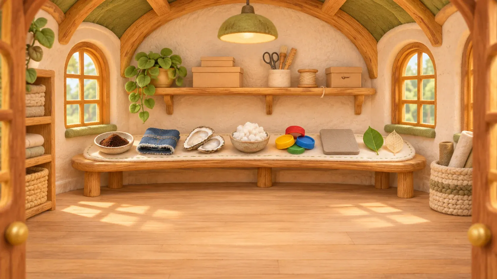

材料小島｜Wishlite
W
Wishlite Material Island
材料小島｜Wishlite
← 返回官網
直接找活動 ↗
集章
0
/ 7
音樂
分享
白天
黃昏
夜晚
每一份材料，
都還有下一站。
點一座島，跟小森看看材料的新可能。
+
−
從一種材料開始
選材料開始探索 ▾
精選導覽
地點清單
回到全景
暫停動態
×
音樂
← 返回官網
材料小島｜Wishlite
每一份材料，
都還有下一站。
跟著小森登上七座島，
看看這些材料還能變成什麼。
跳過
小森在這裡
跟小森出發
我想自己逛逛
重播開場
下一步
→
先看材料故事
島嶼介紹
×

跳過
×
示意圖
▶ 播放影片 · 30 秒
‹
❚❚
下一步 ›
前往其他島
靠近看看殼的紋路
看看手作體驗 ↗
看看商品介紹 ↗
想辦一場活動？
點點看
‹
›
♡ 收藏
×
×
小島正在浮出水面…